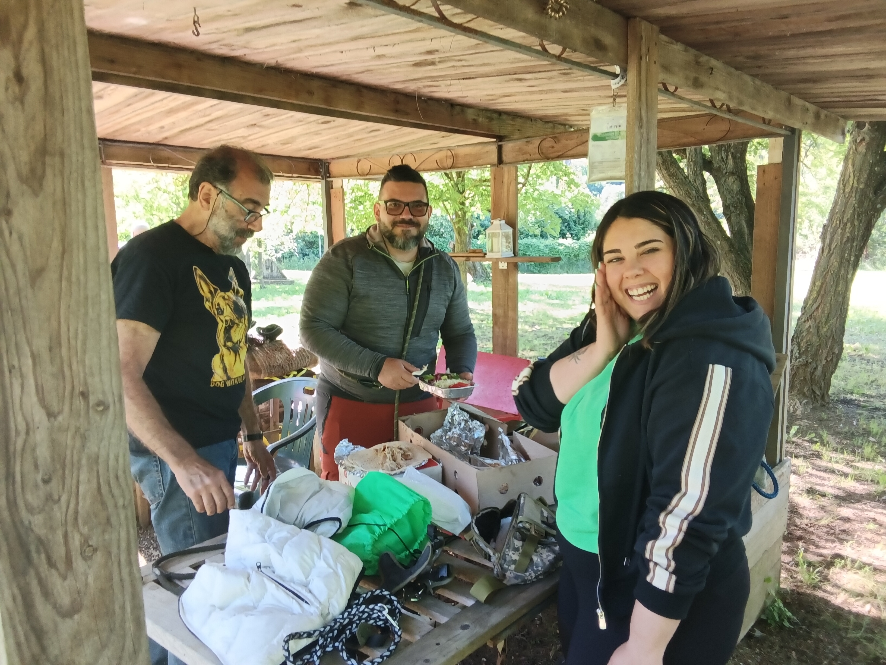
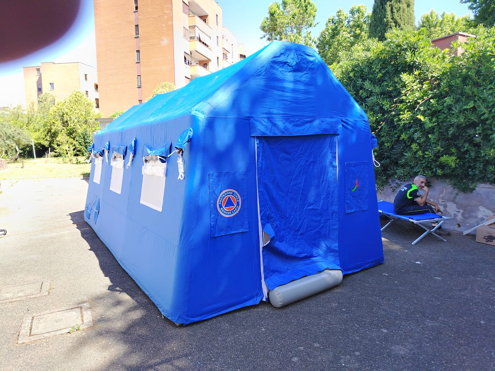
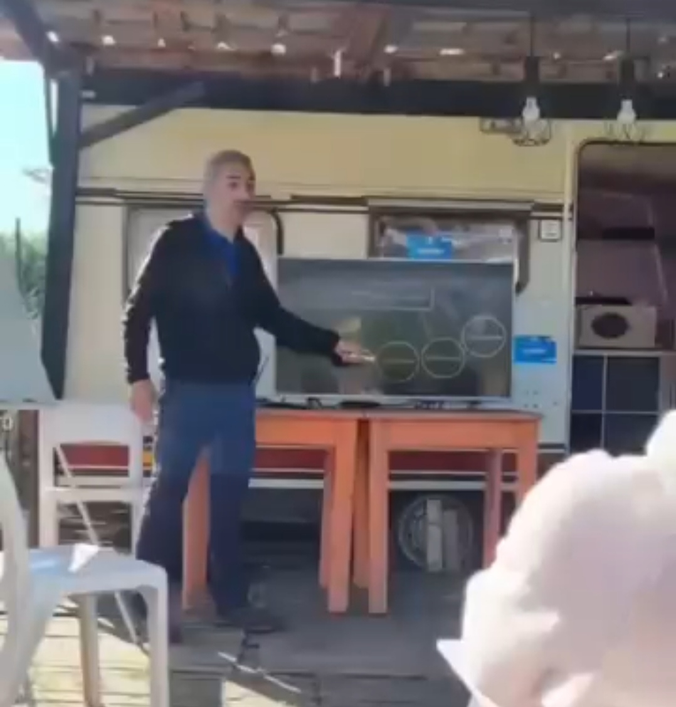
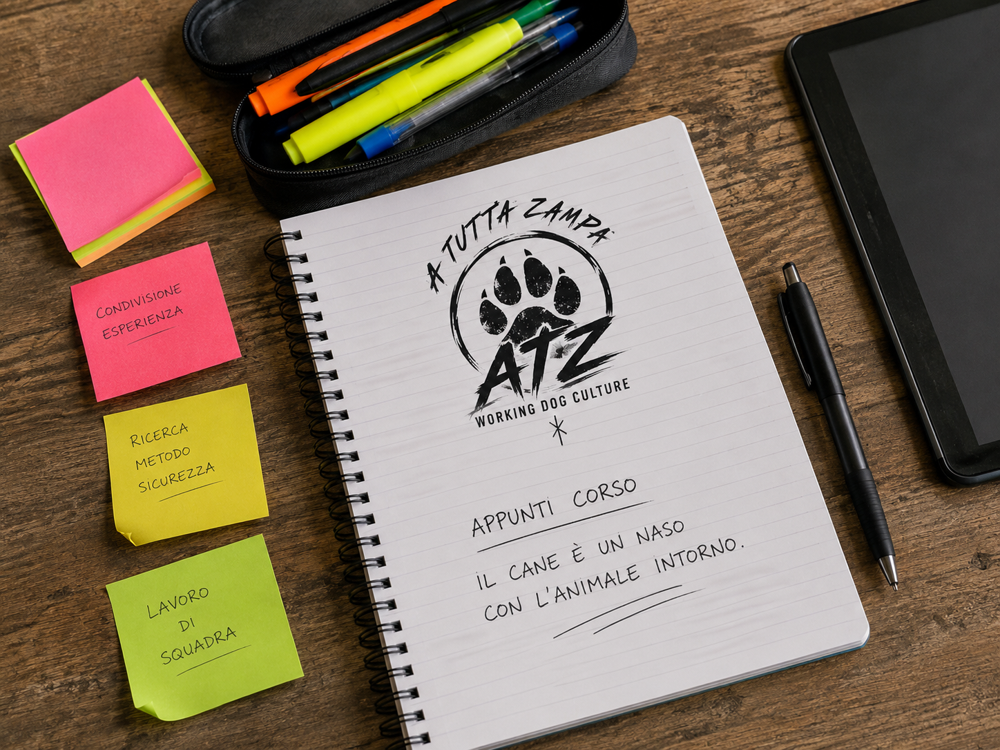

Non tutto quello che conta finisce in una lezione. Non tutto quello che insegna nasce da un esercizio.

Non tutto quello che conta accade durante il lavoro.
Ci si prepara molto prima del momento in cui serve davvero.


Persone diverse. Cani diversi. Lo stesso desiderio di imparare.
La crescita si costruisce nel tempo.
